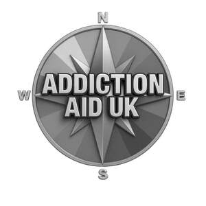

Trade Mark Journal No.2025/041 10 October 2025
UK00004270578 28 September 2025 (9,14,16,20,21,25,28,35,41,44)

- Class 9
- Electronic publications, downloadable; Downloadable electronic books; Downloadable application software; Downloadable mobile applications.
- Class 14
- Jewellery; Necklaces [jewellery]; Bracelets [jewellery]; Charms [jewellery]; Rings [jewellery]; Medallions [jewellery, jewelry (Am.)]; Key chains as jewellery [trinkets or fobs]; Pendants [jewellery].
- Class 16
- Diaries [printed matter]; Planners [printed matter]; Printed stationery; Printed informational cards; Printed cards; Printed teaching material; Printed certificates; Books; Colouring books; Cards; Educational and instructional material; Posters; Art prints; Crossword puzzles; Decorative paper garlands for parties.
- Class 20
- Plastic cake toppers.
- Class 21
- Tableware.
- Class 25
- Hoodies; T-shirts; Jumpers; Hats; Caps with visors.
- Class 28
- Jigsaw puzzles; Balloons; Toys, games, and playthings; Card games.
- Class 35
- Providing online commercial directory information services.
- Class 41
- Providing online publications, not downloadable; Production of podcasts; Production of video and audio recordings; Providing on-line non-downloadable audio content; Educational services in the healthcare sector; Conducting courses, seminars and workshops.
- Class 44
- Consultancy services relating to health care; Meditation services; Drug rehabilitation services; Providing health information via a website; Providing health information; Providing information in the field of health via a website; Addiction treatment services.
Addiction Aid UK Ltd